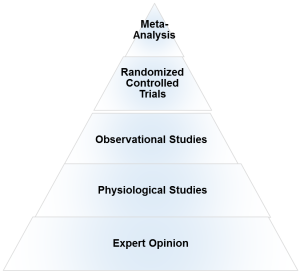
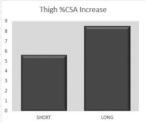
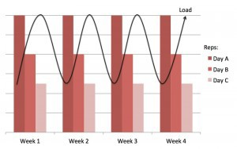
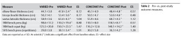
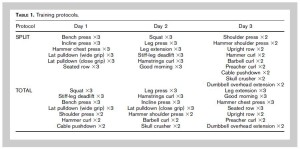
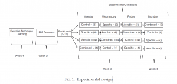

Recent Blog Posts
Exercise
January 1, 2018
Today marks the first day of the new year and the gyms are going to be packed with people whose resolution is to get into shape. Problem is, the vast majority will have quit working out before the end of February. A few things to remember if you’re new to training or getting back after a lengthy layoff:
1. You’re not going to change your body in a week, so don’t overdo it at the beginning; you’ll just end up overly sore which will diminish your ability and desire to train. Start off slow and don’t push it the first few sessions so that your body acclimates to the stress of exercise. As you progress, gradually increase the intensity of training over time in a manner necessary to continually challenge your body to realize continued positive adaptations.
2. Have a plan. If you’re aimlessly walking around the gym deciding what to do, chances are you won’t get optimal benefits. Exercise is a science and should be approached accordingly. Set your goals, create a program consistent with your goals, and then follow the program you’ve laid out. If it’s not working the way you want over time, then assess and refine as required. One of my favorite quotes: Those who fail to plan, plan to fail.
3. Know how to perform exercises properly. Overall the form I see people use in the gym is anywhere from poor to horrendous. Not performing an exercise with good biomechanics at the very least will diminish your results, and at worst will get you injured; both outcomes are demotivating. If needed, consult with a qualified personal trainer. Alternatively, there are plenty of excellent video tutorials from top fitness pros on exercise performance; watch them and learn before setting out on your own.
4. Most importantly, choose a program that fits your lifestyle. Getting results is a lifetime commitment. If a program is not sustainable over the long-term then it’s meaningless.
Exercise, Fitness, Nutrition
March 2, 2017
Anoop Balachandran PhD & Brad Schoenfeld PhD
We are glad that more and more people are demanding and applying evidence in the exercise and nutrition field. That been said, there remains a lot of misunderstanding and misconceptions about an evidence-based Practice (EBP). In this article, we will address some of the common misconceptions and criticisms of EBP. Here we go:
Why do we need EBP? Why can’t we just use anecdotal evidence or expert opinion?
In fact, we’ve used anecdote or expert opinion as ‘evidence’ to treat people throughout the history of medicine. But this approach clearly didn’t work well as shown by hundreds of examples of medical mistakes we made in the past. For example, smoking was ‘good’ for heath until studies showed otherwise; bloodletting was the standard medical treatment for almost 2000 years by the foremost doctors of the West, and so forth. In short, EBP evolved because anecdotal evidence or expert opinion were not producing ‘results’.
You can read more about it here: Why We Need an Evidence-Based Approach in the Fitness Field.
So what is EBP/EBM?
The definition of EBM (Evidence Based Medicine) by David Sackett reads: “EBM is a systematic approach to clinical problem-solving that allows integration of the best available research evidence with clinical expertise and patient values”. This principle can be applied across many scientific disciplines, including exercise and nutrition, to optimize results.
What is the evidence?
Many people wrongly assume that the term “best available evidence” in EBM/EBP is limited to research-based evidence. In fact, evidence can be obtained from a well conducted randomized controlled trial, an unsystematic clinical observation, or even expert opinion. For example, the evidence could come from a controlled trial, your favorite fitness guru, or a physiological mechanism. However, the critical point is that the importance or trust we place on the evidence differs based on the type of evidence. We will talk more about this as we talk about the evidence hierarchy.
What about values and preferences?
Every patient or client assigns his/her own values, preferences, and expectations on outcomes and decisions.
For example, some might place a high value on muscle growth, whereas others would value their general health as most important. Some would value building their upper body muscles more than their lower body muscles. Others may value the social aspect of working out at a gym more than the muscle and strength gains.
And rightly so, these personal decisions have no wrong or right and should be listened to and respected. The job of a fitness professional is to help clients achieve whatever goals they desire; we cannot impose our own values no matter how contrasting beliefs and opinions maybe.
What about clinical expertise? And what is the ‘art’ of EBP that people always talk about?
Clinical expertise is what many refer to as the art of EBP. So, does the art of EBP mean applying what has worked for your clients? Clearly not.
Clinical expertise involves basic scientific knowledge, practical expertise, and intuition to:
• diagnose the problem (for example, why can’t this person squat deep, how to correct exercise technique, why he/she is not gaining strength or losing weight.),
• search for the relevant research evidence (how many sets to gain muscle for an advanced trainee, or which exercise targets specific muscles) and critically analyze the research evidence for methodological issues (was the study in beginners, was the outcome measured relevant)
• understand both the benefits, the risks involved, and other alternative approaches to the goal (a Crossfit type workout might be motivating and improve general cardiovascular endurance, but has a high risk of injuries)
• alter the program based on the client feedback and results (reducing the number of sets or modifying the exercise (angles, ROM and do forth) for an older person or someone with pre-existing shoulder injuries.)
• Listen and understand clients value and preferences, clearly communicate the risk, cost, benefits in a simple manner, and use a shared decision approach to come to a decision
And this is called the art of evidence-based approach. As you can see, it forms an integral part of EBP and no amount of research can replace it. Likewise, no amount of clinical expertise can replace research evidence.
What is the evidence hierarchy? And why are RCT’s (Randomized Clinical Trial) at the top of the pyramid?

An evidence hierarchy is one of the foundational concepts of EBP. And there are three important points to keep in mind:
• First, as shown, the different types of evidence are arranged in an orderly fashion. As we go up the hierarchy, the trust or the confidence we place in the study results go up too. RCT’s are the most valid research design, as they allow the ability to infer causality. And expert evidence is the least trustworthy and occupies the bottom position. Meta-analyses- a collection or a group of RCT’s-are generally considered the highest form of evidence, as they synthesize the entire body of literature on a given topic and quantify the results based on a statistical measure of practical meaningfulness. Meta-analyses can be particularly important in exercise- and nutrition-related topics, as the sample sizes are often small and thus pooling the data across studies provides greater statistical power for inference.
• Second, it is important to note that depending on the quality of the study, an RCT can be downgraded, too. A poorly designed study will never provide a high level of evidence, and in fact can impair the ability to draw proper evidence-based conclusions. The hierarchy therefore is not set in stone.
• Third, there is always evidence. So the best available evidence is what is available and need not come from an RCT (Randomized Controlled Trial). But based on the type of evidence, our confidence in the results and our recommendations will differ accordingly.
What if there are no RCT’s? How do I evaluate a program or diet?
First, as mentioned before, there is always evidence. If there are no RCT’s, you simply move down the evidence hierarchy. But as you go lower in the hierarchy, uncertainty about the validity of the evidence goes up as well. Second, you also must compare the benefits, risks, cost, scientific plausibility, and other alternative programs before making recommendations. Below are a few examples where the absence of an RCT does not preclude recommendations.
Example 1: If a client comes with a new program that uses 5 lb weights to increase strength, we know from basic science that without load progression, muscle and strength gains will be nil. Such a program would go against the most fundamental theory of muscle growth. So you can make a strong recommendation against the program, even without an RCT.
Example 2: Recently, the Ebola virus vaccine was used before conducting an RCT. How is that possible? Here is a classic example of weighing the benefits, risks, alternative approaches, and making a strong recommendation with weak evidence. In this case the risk is death, the benefit is obvious, and there are no alternative approaches. Thus, the risk/reward strongly favored giving the vaccine. And 99% of the informed patients would agree with the recommendation.
Example 3: If a client wants to try the Xfit program, you can convey the lack of studies (weak evidence), the risks involved, the time required for learning the right technique, and give other programs which are in line with her/his goals. If he/she still wants to do it, he/she shouldn’t be critiqued for their decision.
Example 4: An observational study shows that eating meat raises cancer. Considering observational studies are lower in the hierarchy no matter how well the study is conducted, recommendations cannot be more than just suggestions.
What if there are no studies and my client wants to try a new program?
As previously noted, if a person understands the uncertainty due to the lack of studies or weak evidence, availability of alternative programs that fit his/her goal, the cost, and risks, he/she can make an informed personal choice. Keep in mind that majority of the questions in exercise and nutrition are of weak evidence. In fact, it is the same for the medical field too. But what is important is to clearly know and convey what your recommendations are based on.
There are a lot of factors like genetics, diet, motivation that can influence your results. A study hence…
Many people are unaware that in a randomized controlled trial, the randomization serves a crucial purpose: The randomization ensures, at least theoretically, that both the known variables and unknown variables that can affect muscle growth or strength are equally distributed into both groups. That is, if there are unknown genetical factors that can drive muscle growth, it is highly likely these genetically gifted individuals will be distributed evenly. This is the reason why RCT are considered to be the gold standard to study cause and effect. Hence, the results of the study can be pinned to the intervention or treatment
There are numerous problems with scientific study. So you cannot use the results of a study to train your clients?
Yes. But one of the basic steps in EBP is to critically analyze the study: If the study has methodological issues or has a different population than your client, you downgrade the evidence accordingly and lower your strength of recommendations.
Most of the studies in bodybuilding/strength training are on untrained individuals.
Yes. And rightly so, caution should be used when extrapolating recommandations to trained individuals. Exercise science is a relatively new field and studies in trained individuals are small in number, but accumulating. Generalizability (i.e. the ability to apply findings from a study to a given population) must always be taken into account when using research to guide decision-making.
I don’t care about “why” it works or the science behind. All I care about are results.
As previously mentioned, EBP evolved to get better results. It didn’t evolve to explain how or why a treatment works. There are 1000’s of life saving treatments and drugs where the underlying mechanism(s) are just unknown.
Studies are looking at an average of the sample. There is a lot of individual differences.
Yes. In fact, n=1 studies occupy the top of the evidence hierarchy because it applies to the specific individual in question. But these are hard and almost impossible for certain outcomes like muscle growth or disease prevention. There are two concerns with so-called trial and error method that is often talked about.
• First, even if you gain benefits with a certain program, in many cases, it is extremely hard to figure out what was the variable that made the difference. Was it the specific exercise, the change in diet, the placebo effects, genetics, or some unknown variable?
• Second, it may not be clear if you are indeed making an improvement depending on the outcome. For example, gains in muscle come very slowly for trained individuals (like years for a several pounds). Hence, you will have to run a program for a few years to see if it works or not. However, controlled research often uses measures that are highly sensitive to subtle changes in muscle mass, and thus can detect improvements in a matter of weeks.
The program worked for me!
What was the outcome measure? Strength, muscle growth, weight loss? What are you comparing against? Against your previous results? What was the magnitude of the benefit? Without knowing answers to these questions, the meaning of the word ‘worked’ is unclear.
Further, if it indeed worked, we still don’t know what made it work, or if it will work for someone else. So your personal anecdotes are often fraught with problems and unfortunately mean very little. And importantly, just because something “worked” doesn’t mean that another approach might not work better.
This X supplement was shown to increase muscle growth in an animal study. Should I use it?
Research in animal models is almost at the bottom of the evidence hierarchy. It is very weak and hence the uncertainty is high, and deserves no greater than a weak recommendation. Although animal models can serve an important purpose in preliminary research, evidence based practice should rely primarily on human studies when developing applied guidelines.
A lot of the research is sponsored by nutritional and exercise machine companies. Hence not trustworthy.
Yes. If there is a conflict of interest, the study is downgraded.
I saw a supplement study which showed a statistically significant weight loss. Can I use that supplement for my client?
No, you also have to look at how much weight the subjects lost. The term “significance” is a function of the probability of results occurring by random chance; it is not necessarily related to the magnitude of the effect. Provided a large enough sample size, results of a study can be statistically significant even with just a 1 lb weight loss over a 1 year period. This is known as ‘clinical significance’.
Would you take a supplement to lose 1 lb in a year? Depending on the cost, the burden of taking a pill every day, and how much you value weight loss, you may or may not.
EBP does not consider a science-based approach.
EBP does consider a science-based approach. A science-based approach provides strong evidence when the program or treatment violates fundamental principles or universal laws. For example, homeopathy.
However, EBP does not support evidence just based on biological plausibility or mechanistic evidence. For example, if a new diet tells you to eat as much as you want to lose weight, it goes against fundamental laws of thermodynamics. You do not need an RCT to make strong recommendations against this diet
“This house believes that in the absence of research evidence, an intervention should not be used” This was the motion of a debate which took place at the end of the recent PhysioUK2015 Conference in Liverpool.
As you know by now, EBP does not exclusively rely on RCT’s. To quote the famous saying in EBP: “There is always evidence”. It is an unfortunate misrepresentation of EBP/EBM to assume that without RCT’s, a treatment cannot be recommended. For example, smoking has perhaps the greatest detrimental effect on health of any social habit, and health-based organizations universally recommended against its use. But we do not even have even a single RCT on smoking!
Effects of smoking are from observational studies. But since the magnitude of harm is very high, it upgraded in the evidence pyramid. Once again, this shows why the hierarchy is not set in stone.
‘Parachute use to prevent death and major trauma related to gravitational challenge’. This is the title of the paper published in BMJ. The paper satirically argues that parachute use has not been subjected to rigorous evaluation by using RCTs’ and therefore has not been shown to save lives. Critics of EBP have used this as a criticism of EBP and the reliance of RCT’s.
EBP has always maintained that RCT’s are not required when the magnitude of benefits is very high.
For example, insulin injection for diabetes, Heimlich maneuver, and anesthesia are all examples of treatments where the magnitude of benefit is very high, and hence RCT’s are not required nor asked for.
I do not have enough knowledge to critically analyze studies.
There are a few resources in the field of exercise and nutrition that critically appraises the evidence for you. Alanaragon.com, Strengthandconditioningresearch.com and Weightology.net are among the best.
In closing, we hope the article has helped you better appreciate and understand this simple framework called evidence based practice or evidence based medicine. EBP is currently the best approach we have to make decisions related to health, fitness or strength and conditioning. A good EBP practitioner should have a strong understanding of both the practical and the scientific aspects of exercise and nutrition; and more importantly, an untiring commitment and empathy to your clients and their values and preferences.
Exercise, Hypertrophy
December 21, 2016
A popular theory among fitness professionals is that taking short rest periods between sets maximizes muscular growth. The theory is primarily based on the hormone hypothesis, whereby limiting inter-set rest promotes greater elevations in post-exercise growth hormone, IFG-1 and testosterone, and thus enhances the anabolic response to resistance training. One little problem: Emerging evidence indicates that acute increases in anabolic hormones have little if any effect on muscular adaptations, as detailed in my comprehensive review of the topic
In an effort to directly test the theory, our group published a study last year titled, Longer inter-set rest periods enhance muscle strength and hypertrophy in resistance-trained men. In brief, the study not only refuted the claim of a hypertrophic benefit to short rest periods, but in fact showed that resting 3 minutes between sets actually produced superior growth compared to resting 1 minute. Importantly, the study was carried out using a moderate rep range (8-12 reps/set) with all sets performed to muscular failure. The question therefore arises whether results would be applicable when training with lighter weights. No study had ever investigated the topic.
Until now…
In collaboration with colleagues in Japan, we sought to investigate the effects of low-load resistance training with different rest intervals on muscular adaptations. The study titled, Acute and Long-term Responses to Different Rest Intervals in Low-load Resistance Training, was just published in the International Journal of Sports Medicine.
Here’s the lowdown.
What We Did
Subjects were 21 young collegiate athletes who had not performed resistance training for at least 2 years prior to the study. The subjects were randomly divided into two groups: A short rest group (SHORT) that rested 30 seconds between sets and a long rest group (LONG) that rested 2.5 minutes between groups. The load was set at 40% of the subjects’ 1RM in the back squat and bench press using a tempo of 1-0-2 (1 second on the concentric, 2 seconds on the eccentric). Four sets were performed for each exercise, with all sets taken to muscular failure. Training was carried out twice a week for 8 weeks.
What We Tested
Measures of muscle hypertrophy and strength were assessed pre- and post-study. Muscle cross sectional area (CSA) of the triceps and thigh was measured by MRI. A 1RM bench press and squat was employed to measure changes in maximal strength.
What We Found
With respect to hypertrophy, the SHORT group increased muscle CSA by 9.8% while LONG showed an increase of 10.6%. Thigh CSA increased by 5.7% in SHORT versus 8.3% in LONG. No statistically significant differences were noted between any measure of muscle growth.
From a strength standpoint, 1RM in the bench press increased by 9.9% in SHORT and 6.5% in LONG while increases in the squat were virtually identical between groups (5.2% versus 5.4) As with the hypertrophy results, no statistically significant between-group differences were observed in the strength measures.
How Can You Apply These Findings
There are a number of interesting takeaways from the study. First and foremost, this is yet another study showing that training with light weights can promote marked gains in muscle mass in a relatively short time period. There is now a large body of supporting research on the topic using varied methodologies across a variety of populations. The evidence is too compelling for even the most ardent critic to dismiss.
Intriguingly, we found that rest interval length had no statistically significant effects on muscular adaptations. On the surface, these results conflict with our previous research showing that 3 minutes rest produced superior increases in strength and hypertrophy compared to resting 1 minute when training in a moderate rep range (~10RM). Our findings here seem to indicate that rest interval length isn’t an important consideration when training with lighter loads.
A closer look at the data, however, suggests a more nuanced take-home message.

It’s important to realize that the term “statistical significance” refers to the probability of an event happening by chance. Our study had a fairly small sample size, which reduces the ability to detect significance. Hence, we have to look beyond whether results were “significant” and consider other statistical measures. To that end, while hypertrophy of the arms was fairly equal between conditions, gains in thigh muscle CSA clearly favored resting longer between sets. A statistic called the effect size, which is a gauge of the meaningfulness of the results, bears out these differences were indeed consequential. The effect size for the LONG group was 0.93 (considered a large effect) while that of the SHORT group was just 0.58 (considered a moderate effect). The chart above illustrates the absolute differences between thigh growth and rest intervals.
When attempting to reconcile the differences between upper and lower body hypertrophy, it may well come down to total training volume. Short rest blunted increases in training volume in both upper and lower training, but the disparity was much more pronounced in the squat than in the bench. This is logical as the leg/glute muscles have much greater muscle mass than those of the upper trunk/arms, and thus the associated fatigue during high-rep training is greater in multi-joint lower body training, particularly a demanding exercise like the squat. Given the known dose-response relationship between hypertrophy and volume (as clearly displayed in our recent meta-analysis on the topic), the substantial decrease in number of reps performed with short rest periods could conceivably explain the lesser muscle growth seen in the thighs.
In addition to the long-term effects, we also measured hormonal elevations from each condition post-exercise. Both SHORT and LONG showed significant acute spikes in growth hormone and IGF-1, but the increases were similar between groups. Since hormonal increases are related to levels of metabolic stress, it can be inferred that metabolic stress was similar between conditions as well. Although short rest periods have generally been shown to enhance metabolic stress, these findings are specific to moderate rep training. Training with very high reps elicits large increases in lactic acid regardless of how long you rest between sets. Thus, rest interval length seemingly has less relevance in promoting metabolite buildup. Whether metabolic stress influenced results in this study is undetermined as we didn’t seek to assess mechanisms of adaptations. That’s an intriguing topic for future research.
The Bottom Line
* Training with light weights can pack on some serious muscle.
* Short rest between sets has a detrimental effect on lower body hypertrophy when squatting while there does not seem to be much if any negative impact on growth from the bench press when training with light weights. Thus, shorter rest periods for light-load upper body work are a viable option to cut down on training time without sacrificing gains.
* Since single joint exercise does not elicit comparable fatigue to multi-joint movements, it is conceivable that short rest would be similarly viable for single-joint lower body exercises such as the leg extension. This remains speculative, however, as the topic wasn’t directly investigated in our study.
Exercise, Hypertrophy, Studies
April 6, 2016
If you follow my work you’ll undoubtedly know that our lab has carried out a number of studies seeking to determine the effects of training in different repetition ranges on muscle strength and growth. The overall findings from these studies showed similar increases in hypertrophy between both heavy and moderate rep ranges, as well as moderate and high rep ranges.

However, the choice of rep ranges is not necessarily an either-or proposition; you can in fact combine strategies to potentially achieve greater hypertrophic benefits. Daily undulating periodization (DUP) routines are specifically designed for this purpose. However, no study to date had compared a varied rep approach to traditional constant-rep training using site-specific measures of muscle growth.
Until now.
Our study, just published in the International Journal of Sports Medicine, set out to investigate if muscular adaptations would differ between DUP-style routine and a traditional hypertrophy-style protocol. Here’s the scoop.
What We Did
Nineteen young men with over four years average resistance-training experience were randomly assigned to 1 of 2 experimental groups that trained 3 days per week: a constant-rep protocol (CONSTANT) that trained using a standard bodybuilding rep range of 8-12 RM per set, or a DUP-style varied-rep protocol (VARIED) that trained with 2-4 RM per set on Day 1, 8-12 RM per set on Day 2, and 20-30 RM on Day 3. All subjects performed a total-body routine consisting of the following seven exercises per session: flat barbell press, barbell military press, wide grip lat pulldown, seated cable row, barbell back squat, machine leg press, and machine knee extension. We tested subjects for changes in hypertrophy of the arm flexors, elbow flexors and quads, as well as maximal strength in the squat and bench press, and upper body muscle endurance. Training was carried out over an 8-week period, with testing done pre- and post-study.

What We Found
Both groups significantly increased markers of muscle strength, muscle thickness, and local muscular endurance. No statistically significant differences were found between conditions in any of the outcomes studied. Sounds like it really doesn’t matter which option you choose, right?
Well, not so fast…
It’s important to understand that the term “statistically significant” simply refers to the probability of results being due to chance at a predetermined level of 5%. This binary method of determining probability has been widely criticized by those in the know about statistics, who proclaim that practical conclusions cannot be drawn merely on the basis of whether a p-value passes a specific threshold. Rather, probability exists on a continuum, and in this regard the p-values (a measure of probability) in our study favored the VARIED condition in several outcome measures. Moreover, magnitude-based statistics (i.e. effect sizes) indicated a benefit to the VARIED condition for upper body hypertrophy, strength, and muscular endurance; no effect size differences were noted for lower body outcomes.
What are the Practical Implications
The study showed a potential benefit – albeit small – to varying repetitions across a spectrum of ranges for increasing upper body muscle strength and hypertrophy. Whether the differences between the varied versus constant rep approach seen in our study would amount to practically meaningful improvements is specific to the individual. For the average gym-goer it probably wouldn’t be of much consequence; alternatively, to a bodybuilder or competitive athlete it very well may. It’s not clear why these findings did not translate into similar differences in lower body muscular adaptions, but based on our findings either approach would seem to be an equally viable choice for leg training.
It’s important to note that this was a relatively short-term study, lasting a total of 8 weeks. When factoring in missed sessions, this means subjects in VARIED trained in each loading zone for a total of only 7-8 sessions over the course of the study period. If the differences in upper body outcomes favoring VARIED would persist over time – highly speculative but certainly possible – the magnitude of results could widen and thus be potentially meaningful for a wide array of fitness enthusiasts.
Another important point is that volume load was consistently lower across all conditions (pushing exercises, pulling exercises, leg exercises, and total volume of all exercises) in VARIED as compared to CONSTANT. This indicates that training in a varied fashion provides comparable or better results with less volume load than training at a constant 8-12 RM repetition range. It also suggests that if volume load were equated between conditions, there might have been even better results for the varied approach.
In sum, our study shows that both varied and constant loading schemes are viable strategies to increase strength and hypertrophy in resistance-trained men. The data suggest a potential modest benefit to varying loading ranges over time, at least for maximizing upper body muscular adaptations. Importantly, findings clearly indicate that contrary to what many believe, training in the “hypertrophy zone” (6-12 RM) is not superior for building muscle. When considering the practical implications of the findings, remember that exercise prescription is always a function of the needs/abilities/goals of the individual.
Exercise
July 17, 2015
Split routines are pretty much synonymous with bodybuilding. A recent survey of 127 competitive bodybuilders found that every respondent trained with a split routine. Every one! Moreover, 2/3 of respondents trained each muscle only once per week (what is popularly known as a “bro-split”) and none worked a muscle more than twice weekly. The theory behind such routines is that growth is maximized by blasting a muscle with multiple exercises from multiple angles and then allowing long periods of recovery.
Things weren’t always this way, though.
Old-school bodybuilders such as Steve Reeves and Reg Park swore by total-body routines, working all the major muscles each and every session over three non-consecutive days-per-week. Proponents thought that the greater training frequency was beneficial to packing on lean mass.
Thing is, the choice to use one type of routine or another has been almost exclusively based on anecdote and tradition. Surprisingly little research has been carried out on the topic, and no study had directly compared muscle growth in a total-body routine versus a bro-split.
Until now.
My lab carried out a controlled experiment to investigate the effect of training frequency on muscular adaptations. The study was recently published in the Journal of Strength and Conditioning Research. Here’s the scoop.
What We Did
Nineteen young men with an average of more than 4 years lifting experience were randomly assigned to a resistance training program using either a total-body (all muscles worked in a session) or split-body routine (2-3 muscle groups worked per session). The program consisted of 21 different exercises spread out over a 3 day-per-week training cycle. The volume of the routines were matched so that both groups performed an equal number of sets and reps over the course of each week. All subjects performed 3 sets of 8-12RM per exercise. Training was carried out for 8 weeks. The table below shows the program design for both routines.

Subjects were tested pre- and post-study. We used B-mode ultrasound to measure the thickness of the biceps, triceps, and quads, and assessed maximal strength via 1RM for the back squat and bench press. Subjects were advised to consume their normal diets and we monitored food intake by analysis of a self-reported diary.
What We Found
Subjects in both groups significantly increased hypertrophy in the arm and leg muscles. That said, muscle mass increased significantly more in the biceps/brachialis for the group performing total body training compared with those in the split routine group. There was a trend for greater increases in the quads (i.e. vastus lateralis) and the effect size – a measure of the “meaningfulness” of results – markedly favored the total body group. Although no significant between-group differences were found in triceps thickness, the effect size again showed an advantage to total body training.
With respect to strength, both groups significantly increased 1RM performance in the bench press and squat from baseline. There were no significant between-group differences in either of these measures, although the effect size for the bench press did seem to favor the total body group.
How Can You Use This Info?
On the surface it would seem that a total-body routine is superior to a one-muscle-per-week bro-split for building muscle. All of the muscles we investigated showed greater growth from a higher training frequency. For the biceps, these results were “statistically significant,” meaning that that there was a greater than 95% probability that results did not occur by chance. While results in the quads and triceps did not reach “significance,” other statistical measures indicate a pretty clear advantage for the higher frequency routine. These results would seem to be consistent with the time-course of protein synthesis, which lasts approximately 48 hours (there is even some evidence that the time course is truncated as one gains lifting experience). Theoretically, repeated spiking of protein synthesis after it ebbs would result in greater muscular gains over time.
Before you jump the gun and ditch your split, a few things need to be considered when extrapolating results into practice.
First and foremost, it’s important to remember that the study equated volume between conditions. This was done to isolate the effects of frequency on muscular adaptations – an essential strategy for determining causality. However, a primary benefit of a split routine is the ability to increase per-workout volume while affording ample recovery between sessions. Since there is a clear dose-response relationship between volume and hypertrophy, total weekly volume needs to be factored into the equation. Certainly it’s possible that a split routine with a higher weekly volume would have performed as well or even better than the total body routine. Or perhaps not. We simply don’t know based on the current literature.
In addition, the vast majority of subjects in the study reported using a split routine as the basis of their usual workout programs, with muscles worked just once per week. This raises the possibility that the novelty factor of the total body routine influenced results. There is in fact some research showing that muscular adaptations are enhanced when program variables are altered outside of traditional norms. It’s therefore conceivable that participants in the total body group benefited from the unaccustomed stimulus of training more frequently.
Drawing Evidence-Based Conclusions
Given the available info, here’s my take on how the findings can be applied to your training program. There does seem to be a benefit to more frequent training sessions if max muscle is the goal. In this regard, it’s best to directly work each muscle at least twice a week; any less and you’re probably not stimulating protein synthesis frequently enough to optimize hypertrophy. Training each muscle three times a week, at least for periods of time, may provide additional benefits for spurring further gains.
Given the novelty factor, it’s reasonable to speculate that periodizing frequency over the course of a long-term training cycle might be the ideal option. Progressing from periods of working muscles twice to three times per week (and perhaps more) and then cycling back again will conceivably provide a novel stimulus that elicits continued gains. But remember: any discussion of training frequency must take total weekly volume into account. Greater training frequencies (from the standpoint of total training sessions per week) using a split routine can be employed to maximize total weekly volume and thus potentially drive greater hypertrophy over time.
Exercise, Strength Training
May 9, 2015

It’s a commonly accepted tenet that resistance training adaptations follow a “strength-endurance continuum” whereby lifting heavy loads maximizes strength increases while light load training leads to optimal improvements in local muscle endurance. Conventional wisdom also postulates that at least moderately heavy loads are required for building muscle. General training guidelines proclaim that loads lighter than about 65% 1RM are insufficient to stimulate fast-twitch muscle fibers necessary for growth. The so-called “hypertrophy range” is generally considered to be 6-12 reps/set.
Recent research has challenged these established tenets. It has been proposed that if light loads are lifted to muscular failure, near-maximal recruitment of fast-twitch fibers will occur resulting in muscular adaptations similar to those obtained from training heavy.
A meta-analysis from my lab published last year in the European Journal of Sports Science found substantial increases in muscle strength and hypertrophy following low-load training. However, the magnitude of increases were not as great as that associated with using heavier loads, and a trend for superior gains was in fact shown when lifting weights >65% 1RM. I covered the specifics of this meta-analysis in a previous post.
The caveat: All previous studies employed untrained subjects, raising the possibility that results were attributed to the “newbie effect” that states those new to training build muscle from pretty much any activity — even cardio!
To achieve clarity on the topic, my lab carried out a well-controlled study on the effects of high- versus low-load training using resistance-trained individuals, which was just published in the Journal of Strength and Conditioning Research. Here’s what you need to know.
What We Did
Eighteen young men with an average of more than 3 years lifting experience were randomly assigned to a resistance training program using either moderately heavy loads (8-12RM) or light loads (25-35RM). All other aspects of the program were held constant between groups to isolate the effects of load on muscular adaptations. The program consisted of 3 sets of 7 different exercises targeting the major muscle groups (bench press, shoulder press, lat pulldown, seated pulley row, back squat, leg press, and leg extension). Training was carried out on 3 non-consecutive days-per-week (M, W, F) for 8 weeks.
Testing was conducted pre- and post-study. We used b-mode ultrasound to measure the thickness of the biceps, triceps, and quads. We assessed maximal strength via 1RM for the back squat and bench press. Finally, we measured changes in muscle endurance by having subjects perform the bench press at 50% of their 1RM to volitional failure.
What We Found
Both groups significantly increased lean mass in their biceps, triceps, and quads, but no statistically significant between-group differences were noted in any of these muscles (i.e. both groups had similar muscle growth over the course of the study). On the other hand, the heavy load group showed significantly greater strength increases in the back squat and a trend for greater increases in the bench press compared to the light load condition. Conversely, local muscle endurance was markedly greater for the low-load group.
Reconciling the Data
The primary take-home points from the study are as follows:
• Gains in muscle mass are about the same regardless of repetition range provided training is carried out to muscle failure
• Maximal strength requires the use of heavy loading
• Muscle endurance is best obtained from the use of light loads
To really understand the practical implications of the study, however, we need to look a bit deeper at the results.
The superior strength gains for heavy load training are consistent with the principle of specificity, which effectively states that training adaptations are specific to the imposed demands. No surprise here. From a mechanistic standpoint, the ability to exert maximal force has a high neural component, and the associated neural adaptations appear to be optimized through the use of heavy loads. Previous work from my lab showed that these adaptations exist even at the far left aspect of the strength-endurance continuum, as a powerlifting-type routine (3RM) was found to produce greater strength increases compared to a bodybuilding-style workout (10RM). It also makes intuitive sense that you need to train heavy to “get a feel” for using the maximal loads required to perform a 1RM.
The greater improvements seen in local muscle endurance from light-load training were expected as well. Although the topic hasn’t been well-studied, it stands to reason that low-load training is associated with adaptations specific to enhancing buffering capacity, thereby allowing for the performance of a greater number of submaximal repetitions. Again, a basic application of the principle of specifity.
On the other hand, I readily admit to being surprised by the fact that muscle growth was similar between conditions. While a number of previous studies had shown no differences in gains between light- and heavy-load training, I figured this was due to the “newbie effect.” No way could you build appreciable muscle using 30 reps per set.
Or so I thought.
I’m now a believer.
What’s particularly interesting, though, are the potential implications for how muscle growth actually manifests when training in different loading zones. A previous study from my lab showed that muscle activation was markedly greater when performing reps at 75% 1RM versus 30% 1RM. A follow up study (currently in review) found that the heavy-load superiority for activation held true when training at 80% 1RM versus 50% 1RM as well. Combined, these findings suggest that the recruitment and/or firing frequency in the high-threshold motor units associated with the largest type II fibers is suboptimal when training at low-loads. It therefore can be hypothesized that if muscle growth is indeed similar across loading zones — as found in the current study — hypertrophy from light-load training necessarily must be greater in the type I fibers. Indeed, emerging research out of Russia indicates that this is in fact that case with multiple studies showing that light loads promote greater gains in type I fibers while heavy loads increase type II fiber hypertrophy to a greater extent (Netreva et al 2007; Netreba et al 2009; Netreba et al 2013; Vinogradova et al 2013).
Bottom line: If your goal is to build as much muscle as possible, it seems appropriate to train across the spectrum of loading zones; use lighter loads to target type I fibers and heavier loads to target type IIs. In this way, you ensure maximal development of all fiber types.
An interesting point to keep in mind is that none of the subjects in my study trained with more than 15 reps/set during the course of their usual lifting routines and the majority never went above 10 reps. This raises the possibility that their endurance-oriented type I fibers were underdeveloped in relation to the strength-oriented type II fibers. If so, it’s possible that their type I fibers had a greater capacity for growth, which was realized in those who trained using light loads.
The study had some notable limitations. For one, the training period lasted only 8 weeks; whether results would have diverged over a longer time-frame is undetermined. For another, muscle thickness was measured only at the approximate mid-point of each muscle. Research has shown that muscles often hypertrophy in a non-uniform manner. Thus, it is possible that other aspects (i.e. distal or proximal) of the muscles studied might have differed in their growth response.
A final and important point to consider. While people often dismiss light-loads as being for wimps, nothing could be further from truth. Training to failure with high reps is highly demanding and the associated acidosis extremely uncomfortable. To this end, approximately half the subjects in the low-load group puked during the first week of training and several others experienced nausea and/or light-headedness. Although these issues tended to dissipate as time went by, they nevertheless can negatively affect adherence to the program. If you choose to incorporate light-loads into your program, be prepared for a grueling workout!
Exercise
March 29, 2015
“You’re done!”
These are the words of a noted fitness trainer in response to a bodybuilder who spoke of packing on some additional muscle. The trainer went on to say that you can only gain muscle for a couple of years; after that, you’ve maxed out your genetic potential.
Done!
If the trainer is indeed correct in his claim, then everyone with a modicum of training experience is basically spinning his wheels in the gym; might as well just do a couple of 15 minute HIT workouts and maintain what you’ve got. Fortunately for those of us who aspire to keep making gains, the comments made were both misguided and uninformed.
Don’t get me wrong. There certainly are upper limits to how much muscle you can build, just as there are limits to muscular strength, aerobic endurance, and any other exercise-induced adaptation. This is commonly known as your “genetic ceiling”; at a certain point, you hit your ceiling and further gains cease.
Thing is, how do you know if you’ve reached your genetic ceiling?
Answer: You don’t.
In fact, you can’t.
All you can ascertain is whether or not your training regimen is producing positive changes in your physique. And if you’re not in fact growing from your present routine, that doesn’t mean you might not see results from an alternative strategy. The number of possible ways to vary program design is virtually unlimited. Unless you try each and every alternative, there’s no way to know if another approach might be the ticket to further gains.
Understand that the reason your muscles adapt to an exercise stimulus is a function of survival. Your body doesn’t realize the reason you hit the gym is to look jacked in a tank-top; rather, it senses a high degree of physical stress that is deemed a threat to survival. In response, a coordinated series of intracellular events are initiated to strengthen the muscles and supporting tissues so that they are better prepared the next time you lift.
Adaptation!
Problem is, the more you continue to provide similar stimuli, the less of a need for future adaptation. Further growth can only occur by subjecting your muscles to a novel overload stimulus.
The imprudent nature of the comments made by the aforementioned trainer is reflected in his own training practices. Namely, he is known to perform the same basic routine over and over each and every year. Why would the body respond to a stimulus that it perceives it can readily handle?
Answer: It won’t.
While a “ceiling” may exist in theory, you never actually realize your full genetic potential; there is always the ability to further increase muscle mass. Indeed, muscular gains can be made even at very advanced levels, albeit at a much slower pace than when you first started training.
Numerous research studies – including those from my own lab – show that those with considerable training experience do in fact build appreciable muscle when a novel stimulus is applied. Thus, the claim that a couple of years hitting the weights maxes out your genetic potential is patently false. Because of the difficulties in carrying out studies on those near the limits of their hypertrophic ceiling, research on this population is scant. That said, I recently collaborated with a group in Brazil on a study involving off-season pro bodybuilders who weren’t using performance enhancing drugs (the study is currently in journal review). Suffice to say, significant gains in fat-free mass (as measured by DXA) were noted after just 4 weeks of intense training. Anecdotally, I’ve worked with numerous competitive natural physique athletes who’ve added several pounds of lean body mass over the course of a regimented hypertrophy training phase.
Now the closer you get to your individual ceiling, the more essential it is to take a scientific approach to training and nutrition. From a training standpoint, this entails precise manipulation of resistance exercise variables. Here, the concept of “progressive overload” needs to be expanded beyond simply increasing load within a given rep range. Adaptation can and should be achieved by varying loading zones as well. If nothing else, changing up loading patterns provides a novel stimulus to your muscles that can spur new growth. Moreover, emerging evidence suggests that heavy, moderate, and light loads promote fiber type-specific increases in growth that can maximize whole muscle hypertrophy. Perhaps more importantly, volume of training should be progressively increased, culminating in a high-volume phase designed to promote functional overreaching. When properly executed, this results in a supercompensatory response that increases muscle in even the most advanced lifters. Many other advanced lifting strategies also can be employed to enhance results; you’re only limited by your determination and base of knowledge.
Bottom line; If someone tells you that you’re done adding muscle, pay them no heed. It’s a self-limiting attitude that will keep you from achieving your full genetic potential.
Exercise, Strength Training
December 21, 2014
It is often stated that heavy loads (>65% 1RM) are required to promote muscular adaptations; light loads are generally considered ineffective for enhancing these outcomes. Recently, this belief has been challenged by several researchers. It has been proposed that as long as training is carried out to muscular failure, light load training will recruit the full spectrum of motor units (and thus muscle fibers), allowing for gains similar to that of using heavy loads.
Last year, I published a review on the topic in the journal Sports Medicine titled, Is there a minimum intensity threshold for resistance training-induced hypertrophic adaptations?. After thoroughly scrutinizing the body of literature, I ultimately concluded: “Current research indicates that low-load exercise can indeed promote increases in muscle growth in untrained subjects, and that these gains may be functionally, metabolically, and/or aesthetically meaningful.”
However, a narrative review is limited to drawing inferences based on a general sense of the research evaluated; it cannot provide quantification of data. A big issue with resistance training studies is that they are very costly and time-consuming to carry out. This invariably leads to small sample sizes where studies lack statistical power to note a significant difference (a so-called a Type II error). I therefore decided to conduct a meta-analysis, where the data from all relevant studies are pooled to maximize statistical power. and thus provide greater clarity on the topic. I teamed up with my colleagues James Krieger, Jacob Wilson, and Ryan Lowery to carry out the analysis.
What We Did
A systematic search of the literature was conducted to identify studies that would potentially be relevant to the meta-analysis. We filtered through the studies and subjected them to rigid inclusion criteria. To meet eligibility, studies had to:
1. Be a randomized controlled trial involving both low (<60% 1RM)- and high-load (>65% 1RM) training
2. Span at least 6 weeks
3. Directly measure dynamic muscle strength and/or hypertrophy
4. Carried out training to momentary muscular failure in both protocols
A total of 13 studies were identified that met inclusion criteria. Three of these studies did not contain adequate data for computation of effect sizes, leaving a total of 10 studies for analysis. Studies were separately coded by two researchers, and we cross-checked our data for consistency. We then randomly chose 3 studies for recoding to ensure there was no “coder drift.” The results of these studies were converted into effect sizes for comparison between conditions.
What We Found:
No significant differences were seen between low- versus high-load training in either strength or hypertrophy, although a trend for greater increases was noted in both conditions.
What These Results Mean
Results of the meta-analysis support the findings of my narrative review on the topic, showing that substantial hypertrophy and even strength can be achieved by training with light loads. Based purely on statistical probability (i.e. the odds that results are due to chance), there was no difference between using heavy and light loads for gaining strength or muscle. However, several things need to be taken into account when drawing evidence-based conclusions.
First, there was a trend for greater results in both strength and hypertrophy. This is a topic that has not been extensively researched, thereby limiting the statistical power of the meta-analysis. The trends noted would suggest that there is actually a difference favoring the heavy load condition, but statistical power was not great enough to sufficiently detect such a difference. Looking beyond basic probability statistics, other analytic measures provide interesting insight into results. Of particular note was the fact that the effect size (a measure of the magnitude of the difference in results) for strength was was markedly higher in the heavy- vs. light-load condition (2.30 versus 1.23, respectively). The 95% confidence interval differential also favored using heavy loads (CI: -0.18–2.32). Moreover, all 9 studies that investigated strength as an outcome favored high-load training, and six of these studies showed a moderate to strong difference in magnitude of effect. In combination, this provides strong evidence that maximal strength gains require heavier loads.
Effect size data for hypertrophy also favored the high- versus low-load conditions (0.82 vs 0.39), although the differential was not nearly as compelling as for strength. Taken in combination with the trend for significance, this suggests a potential advantage for higher-load training when the goal is maximal hypertrophy.
When reconciling findings, the results of our analysis provide compelling evidence that the use of light loads can be effective for increasing muscle size as well as muscle strength. These findings have wide-ranging implications for many populations, particularly the elderly and those with medical conditions that might preclude the use of use of heavier loads (i.e. osteoarthritis, osteoporosis, etc). Alternatively, those seeking to maximize muscular adaptations would require at least some use of heavy loading. Despite an inability to detect significant differences between conditions, the findings indicate a clear advantage for the use of heavier loads to maximize strength gains. There is a suggestion that heavy loads promote greater hypertrophic increases as well, but this inference is not as convincing. With respect to hypertrophy, it can be hypothesized that combining high- and low-loads could optimize fiber-type specific growth across the spectrum of myofiber isoforms. This hypothesis warrants further study.
A primary limitation of the meta-analysis was that all of the studies analyzed were carried out in untrained individuals; no published study to date has evaluated the topic in well-trained individuals. The good news is that I have completed just such a study, where subjects were all experienced lifters. The study is currently in review. I hope to be able to share results and their implications soon. Stay tuned!
Exercise, Hypertrophy
October 20, 2014
I recently collaborated with my colleague Menno Henselmans on a review paper that sought to provide clarity on the effects of rest intervals on muscle hypertrophy. Based on the current literature, we concluded that evidence was lacking to support the contention that rest interval length has an impact on growth. Problem is, there have been very few studies carried out to investigate the topic. Thus, it’s difficult to say with any degree of confidence as to whether there are or aren’t any benefits to varying how long you should rest between sets. For more on specifics of the review paper check out my blog post where it is discussed in detail.
Fast forward to today: A new study has just been published titled, Short rest interval lengths between sets optimally enhance body composition and performance with 8 weeks of strength resistance training in older men that sheds further light on how the duration of rest intervals may affect muscular adaptations. If you just read the abstract, you might think the answer is clear.
Not so fast…
Here’s my take:
Study Design
22 older men (mean 68 yrs) were recruited for participation. Subjects were healthy but were not involved in resistance training. All subjects underwent a 4-week “break in” phase where they performed a “hypertrophy-type” total body routine consisting of 2-4 sets of 8-15 reps per set. The subjects were then tested for various measures including strength and body composition, and then pair-matched based on 1RM bench press to perform an 8-week strength-type program with short rest (1 minute) or long rest (4 minutes) between sets. The strength-type routine consisted of 2-3 sets of 4-6 reps carried out 3 days a week. The exercises included leg press, flat bench machine chest press, lat pulldown, seated row, dumbbell step-ups, dumbbell Romanian deadlifts, knee extension, and knee flexion. Reps were performed with the intent to move the loads as fast possible while maintaining proper form. All sessions were supervised by trained personnel.
Results
Results were determined over the final 8-week strength phase of the program. Significantly greater increases in fat free mass (FFM), 1RM bench press, and 1RM leg press were noted for the short-rest group compared to those who took long rest periods. The researchers investigated a wide array of additional outcomes including power measures, which also generally favored the short rest group as well.
Commentary
Based on these results, it would appear that limiting rest between sets is beneficial to enhancing strength and hypertrophy. The increase in FFM for the short-rest group was 1 kg vs just a 0.3 kg increase for the long-rest group. The effect size — a measure of the meaningfulness of the results — was 0.37 indicating a fairly small effect. That said, a difference of 0.7 kg (equating to ~1.5 pounds) could certainly be meaningful for those seeking to maximize hypertrophy — particularly over a fairly short period (8 weeks). The effect sizes for strength were fairly large (0.65 and 0.76 for the 1RM bench and squat, respectively). Combined, these findings indicate that muscular adaptations are enhanced by taking short rest periods between sets.
But…a closer scrutiny of the study’s methodology gives reason for caution when drawing conclusions.
First and foremost, the researchers used DXA to measure body composition. The authors reported results for FFM, which as stated were higher for the short rest group. However, FFM encompasses all tissues in the body other than fat mass. This includes bone, connective tissue, and importantly water. You can probably rule out any differences associated with bone and connective tissue, which almost certainly would be minimal over an 8 week resistance training in terms of contribution to body mass. However, variances in water weight could easily have accounted for a large portion of the the reported 0.7 kg difference in FFM. It’s curious why the researchers did not choose to quantify the subject’s segmental muscle mass. There are equations that can be employed with DXA to obtain these values, which would have given a better sense as to true increases in muscle. Unfortunately, the reported data do not allow for a true understanding of changes in the lean component of body composition between groups.
Second, the subjects did not train to failure in either condition. The researchers stated that this was done to reduce neuromuscular fatigue and thus ensure that the subjects could tolerate the program over its duration. While I have no problem with that reasoning, it does raise a major issue: Since those in the short rest interval group had to lift again after only 60 seconds, they would have been taxed to a greater extent on each successive set. The long-rest group on the other hand would have sufficient time to recover prior to the next set, and thus would not have been substantially taxed at point during the workout. Now it is a bit difficult to determine how much the subjects were actually challenged on each set based on the study write up. Ideally the researchers should have quantified the level of effort exerted (perhaps by RPE or similar scale) to provide context. Without this info, I’m left wondering if the design was biased to produce a greater effect with shorter rest periods.
Finally and importantly, the study was carried out on elderly, untrained subjects. These individuals would no doubt have been sarcopenic, and their response to an exercise stimulus therefore would not necessarily mimic that of young, fit individuals. Thus, generalizability of results is limited to the population studied.
In conclusion, this is an interesting study that adds to the body of literature. However, caution must be exercised when attempting to draw conclusions as to the effects of rest interval length on muscular adaptations. The limitations of the study preclude extrapolation of results to those seeking maximal muscle mass.
The good news is that I am currently collaborating on a study on the topic that directly measures hypertrophy in well-trained subjects. Target completion for data collection is early next year. I will update when results are available.
Exercise
August 30, 2014
It’s commonly taken as gospel that you need to warm-up prior to lifting. The warm-up contains two basic components: a general warm-up to raise core temperature, and a specific warm-up to heighten neural activation. The combination of these procedures is purported to enhance exercise performance. However, while research does seem to support this contention during maximal or near-maximal efforts, studies are lacking as to the effects of warming up during submaximal lifting routines.
To help determine the impact of warming up on a typical bodybuilding-style workout, I recently collaborated with colleagues in Brazil to carry out a controlled study on the topic. Here is an overview of the methodology and findings of the study, as well as its practical implications.
What We Did

Fifteen young men were recruited to participate in the study. Subjects were “recreationally trained” meaning they had limited lifting experience (resistance training for less than a year on average). Each subject performed 4 exercise sessions on separate days (48-72 hours between sessions) using the following different warm-up strategies prior to each workout: a general warm-up; a specific warm-up; a combination general and specific warm-up, or; no warm-up. In the aerobic warm-up subjects performed 10 minutes of light cycling exercise at a speed of 40 km/hr. For the specific warm-up, subjects performed a light set (10 reps at 50% 1RM) of the specific exercise before performance of that exercise. The order of the warm-ups was counterbalanced between subjects as shown in the accompanying figure to ensure that this variable did not unduly influence results. Exercise sessions consisted of 4 sets of the bench press, squat and arm curl at 80% 1RM. All sets were carried out to the point of muscular failure.
What We Found
There were no significant differences between the number of repetitions performed in any of the warm-up conditions nor was their a difference in the fatigue index, which is a formula that assess the decline in number of repetitions across the first and last sets of each exercise. In combination, these findings indicate that the warm-up procedures analyzed in this study had no effect on performance.
Practical Implications
At face value it would appear that a warm-up is pretty much useless prior to submaximal resistance training. Despite the currently held belief that warming up enhances exercise performance, no benefits were seen between either a general warm-up, specific warm-up or combination of the two compared to no warm-up at all. Intuitively this seems to make sense in that the initial repetitions of a submaximal lifts are in effect their own specific warm-up and the need to increase core temperature might be superfluous from a performance standpoint when multiple reps are performed.
When applying these results to practice, however, several factors must be taken into account. First, the subjects in this study were recreationally trained; although they had some experience with resistance training they were in no way highly skilled lifters. It certainly is feasible that those with extensive lifting experience who have highly developed neuromuscular patterns might benefit from even slightly increased neural responses.
Second, you need to take into account the type of exercise performed. To this point, there did seem to be a slight advantage to performing a specific warm-up in the squat (although it did not rise to statistical significance) while there actually seemed to be somewhat of a detriment to the specific warm-up in the biceps curl. Thus, more complex movement patterns would seem to benefit from the “practice effect” of a specific warm-up while this would be of no value during performance of simple exercises.
Third, the absolute amount of weight lifted also must be considered. A good case can be made that a specific warm-up would have more utility for someone benching 400 pounds as opposed to 200 pounds. Even though the “heaviness” of the load would be similar on a relative basis, the neural benefits of doing a lighter set would seem to have greater transfer when lifting the heavier absolute load.
Finally, we did not investigate safety-related issues of warming up — only performance-aspects were assessed. Although no subjects in this study were injured during testing, the sample was too small and the duration of the protocol too short to draw conclusions on the topic. While resistance training with submaximal loads generally has very low risk of injury provided proper form is maintained, there nevertheless exists the possibility that warm-up procedures could reduce the risk even further. This seems especially pertinent when working with high absolute loads.
The take-home message is to consider your own situation when determining whether or not to warm up prior to a submaximal lifting session. Yes, a warm-up does take a bit of time and you might be able to skip the procedure if you are time-pressed without enduring any negative effects on performance. This is particularly valid if you are less experienced at training and/or lifting fairly light loads. On the other hand, if you are a highly experienced trainee lifting heavy absolute loads then there very well might be a benefit to warming-up — this study certainly cannot be used as evidence to the contrary. Also, understand that research only reports the means (i.e. averages) between groups. There were in fact differences between responses whereby some subjects did show a beneficial effects from warming up while others did not. Only through individual experimentation can you determine if a warm-up enhances your own performance. Finally, there are potentially safety issues that were not studied here; a warm-up certainly would not seem to hurt in this regard and possibly could be of some help.
Reference
Ribeiro AS, Romanzini M, Schoenfeld BJ, Souza MF, Avelar A, Cyrino ES. Effect of different warm-up procedures on the performance of resistance training exercises. Percept Mot Skills. 2014 Aug;119(1):133-45.


 Entries (RSS)
Entries (RSS)


{kind=link}
{kind=link}
{kind=link}
{kind=link}
{kind=link}
{kind=link}